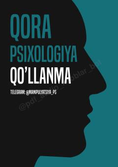

QPKundalik hayotda qo'llaniladigan amaliy psixologik maslahatlar va usullar to'plami.
Mazkur qo'llanma kundalik hayotda duch kelinadigan vaziyatlar va muloqot jarayonlarida yordam beradigan amaliy maslahatlar va texnikalarni o'z ichiga oladi. U insonlar o'rtasidagi o'zaro munosabatlar va psixologik usullarni tushunishga qaratilgan umumiy tavsiyalarni beradi.